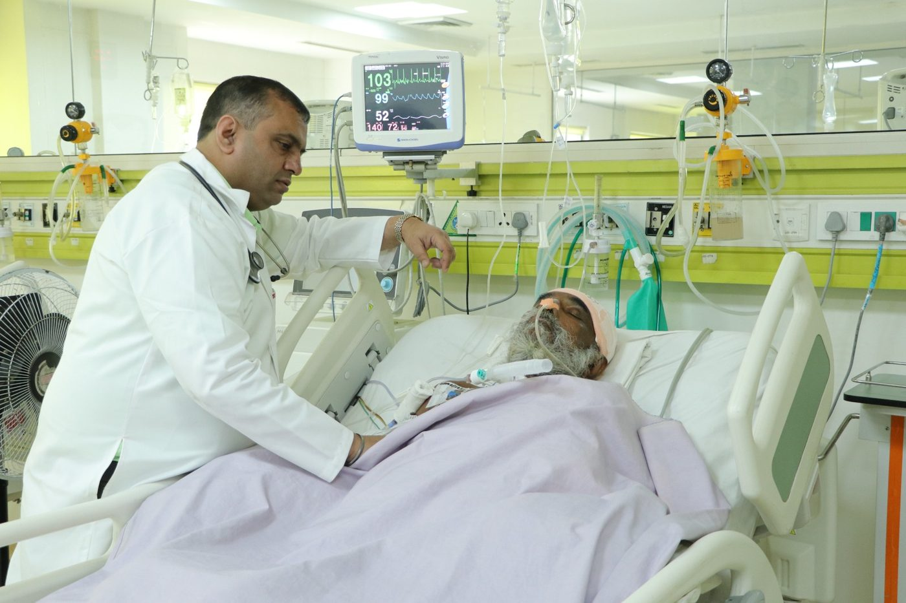
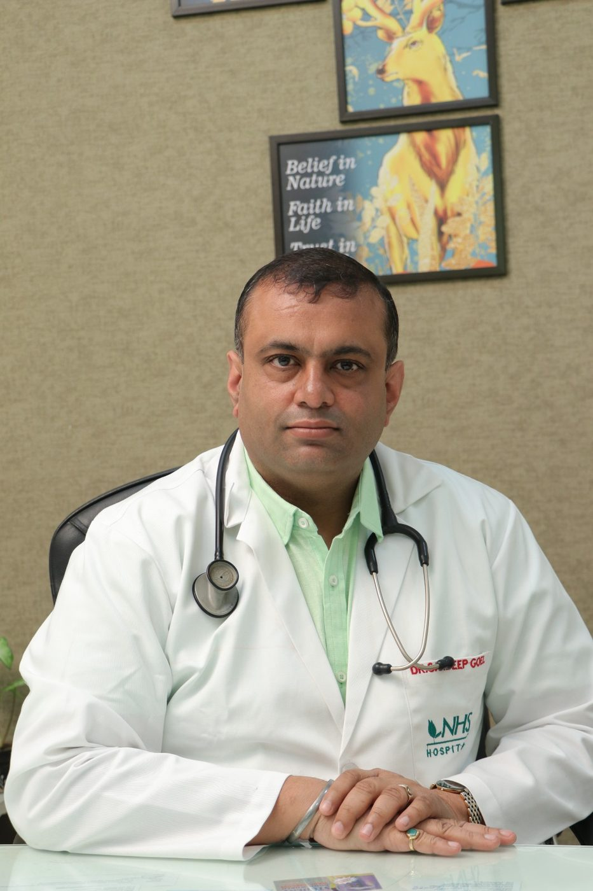

What the cardiac team treatsਦਿਲ ਦੀ ਟੀਮ ਕੀ ਇਲਾਜ ਕਰਦੀ ਹੈ
Diagnostics and treatment run from the same department, so a test and the conversation about what it means happen in one visit where possible.ਜਾਂਚ ਤੇ ਇਲਾਜ ਇੱਕੋ ਵਿਭਾਗ ਵਿੱਚ, ਸੋ ਟੈਸਟ ਤੇ ਉਸ ਦਾ ਮਤਲਬ ਸਮਝਾਉਣਾ ਬਹੁਤੀ ਵਾਰ ਇੱਕੋ ਫੇਰੀ ਵਿੱਚ ਹੋ ਜਾਂਦਾ ਹੈ।
Angiography & angioplastyਐਂਜੀਓਗ੍ਰਾਫ਼ੀ ਤੇ ਐਂਜੀਓਪਲਾਸਟੀ
Coronary angiography to see the blockage, and angioplasty with stenting where it is clinically indicated.ਬੰਦ ਨਾੜੀ ਦੇਖਣ ਲਈ ਐਂਜੀਓਗ੍ਰਾਫ਼ੀ, ਤੇ ਲੋੜ ਹੋਣ ਉੱਤੇ ਸਟੰਟ ਨਾਲ ਐਂਜੀਓਪਲਾਸਟੀ।
Second opinion on reportsਰਿਪੋਰਟਾਂ ਉੱਤੇ ਦੂਜੀ ਰਾਏ
A consultant reads your angiography, ECG and echo and writes down whether the blockage is significant, and what the options are.ਡਾਕਟਰ ਤੁਹਾਡੀ ਐਂਜੀਓਗ੍ਰਾਫ਼ੀ, ECG ਤੇ ਈਕੋ ਪੜ੍ਹ ਕੇ ਲਿਖ ਕੇ ਦੱਸਦਾ ਹੈ ਕਿ ਰੁਕਾਵਟ ਕਿੰਨੀ ਗੰਭੀਰ ਹੈ ਤੇ ਕੀ-ਕੀ ਬਦਲ ਹਨ।
Chest pain assessmentਛਾਤੀ ਦੇ ਦਰਦ ਦੀ ਜਾਂਚ
ECG, echo and stress testing to work out whether symptoms are cardiac or something else.ECG, ਈਕੋ ਤੇ ਸਟਰੈੱਸ ਟੈਸਟ ਨਾਲ ਪਤਾ ਕਰਨਾ ਕਿ ਤਕਲੀਫ਼ ਦਿਲ ਦੀ ਹੈ ਜਾਂ ਕਿਸੇ ਹੋਰ ਕਾਰਨ।
Pacemakers & rhythmਪੇਸਮੇਕਰ ਤੇ ਧੜਕਣ
Assessment of palpitations, blackouts and slow rhythms, with pacemaker implantation when indicated.ਧੜਕਣ ਤੇਜ਼ ਹੋਣਾ, ਬੇਹੋਸ਼ੀ ਤੇ ਹੌਲੀ ਧੜਕਣ ਦੀ ਜਾਂਚ, ਤੇ ਲੋੜ ਹੋਣ ਉੱਤੇ ਪੇਸਮੇਕਰ।
Heart failure & follow-upਦਿਲ ਦੀ ਕਮਜ਼ੋਰੀ ਤੇ ਅਗਲੀ ਜਾਂਚ
Medical management, monitoring and review after a heart attack or a procedure.ਦਵਾਈਆਂ ਨਾਲ ਇਲਾਜ, ਨਿਗਰਾਨੀ ਤੇ ਦਿਲ ਦੇ ਦੌਰੇ ਜਾਂ ਆਪਰੇਸ਼ਨ ਤੋਂ ਬਾਅਦ ਦੀ ਜਾਂਚ।
Risk-factor careਖ਼ਤਰੇ ਘਟਾਉਣ ਦਾ ਇਲਾਜ
Blood pressure, cholesterol, diabetes and lifestyle, with dietetics support in the same building.ਬੀ.ਪੀ., ਕੋਲੈਸਟਰੋਲ, ਸ਼ੂਗਰ ਤੇ ਰਹਿਣ-ਸਹਿਣ, ਨਾਲ ਖ਼ੁਰਾਕ ਮਾਹਿਰ ਦੀ ਸਲਾਹ ਇਸੇ ਇਮਾਰਤ ਵਿੱਚ।
How the second opinion worksਦੂਜੀ ਰਾਏ ਕਿਵੇਂ ਮਿਲਦੀ ਹੈ
A review does not replace your treating doctor. It gives you a second qualified reading of the same evidence before you decide.ਦੂਜੀ ਰਾਏ ਤੁਹਾਡੇ ਇਲਾਜ ਕਰ ਰਹੇ ਡਾਕਟਰ ਦੀ ਥਾਂ ਨਹੀਂ ਲੈਂਦੀ। ਫ਼ੈਸਲਾ ਕਰਨ ਤੋਂ ਪਹਿਲਾਂ ਉਹੀ ਰਿਪੋਰਟਾਂ ਦੀ ਦੂਜੀ ਯੋਗ ਪੜ੍ਹਤ ਮਿਲਦੀ ਹੈ।
Send your case summaryਆਪਣਾ ਵੇਰਵਾ ਭੇਜੋ
Age, symptoms, what you have been advised so far, and the medicines you are on.ਉਮਰ, ਤਕਲੀਫ਼, ਹੁਣ ਤੱਕ ਮਿਲੀ ਸਲਾਹ, ਤੇ ਚੱਲ ਰਹੀਆਂ ਦਵਾਈਆਂ।
Share the filesਰਿਪੋਰਟਾਂ ਸਾਂਝੀਆਂ ਕਰੋ
Angiography CD or report, ECG, echo and blood work — bring them in or send them to the desk.ਐਂਜੀਓਗ੍ਰਾਫ਼ੀ ਦੀ CD ਜਾਂ ਰਿਪੋਰਟ, ECG, ਈਕੋ ਤੇ ਖ਼ੂਨ ਦੇ ਟੈਸਟ — ਲੈ ਆਓ ਜਾਂ ਕਾਊਂਟਰ ਉੱਤੇ ਭੇਜ ਦਿਓ।
A written view, in 24–48 hours24–48 ਘੰਟਿਆਂ ਵਿੱਚ ਲਿਖਤੀ ਰਾਏ
Whether the narrowing is significant, whether stent, bypass or medicines fit best, and how urgent it is.ਰੁਕਾਵਟ ਗੰਭੀਰ ਹੈ ਜਾਂ ਨਹੀਂ, ਸਟੰਟ, ਬਾਈਪਾਸ ਜਾਂ ਦਵਾਈਆਂ ਵਿੱਚੋਂ ਕੀ ਠੀਕ ਹੈ, ਤੇ ਕਿੰਨੀ ਛੇਤੀ ਲੋੜ ਹੈ।
Turnaround depends on the files being complete and legible. A second opinion is a clinical assessment, not a promise of a particular conclusion or outcome.ਸਮਾਂ ਇਸ ਗੱਲ ਉੱਤੇ ਨਿਰਭਰ ਹੈ ਕਿ ਰਿਪੋਰਟਾਂ ਪੂਰੀਆਂ ਤੇ ਪੜ੍ਹਨਯੋਗ ਹੋਣ। ਦੂਜੀ ਰਾਏ ਇੱਕ ਡਾਕਟਰੀ ਜਾਂਚ ਹੈ, ਕਿਸੇ ਖ਼ਾਸ ਨਤੀਜੇ ਦਾ ਵਾਅਦਾ ਨਹੀਂ।

Dr. Sahil Sareenਡਾ. ਸਾਹਿਲ ਸਰੀਨ
Consultant Cardiologist — interventional cardiologyਦਿਲ ਦੇ ਰੋਗਾਂ ਦੇ ਮਾਹਿਰ — ਇੰਟਰਵੈਂਸ਼ਨਲ ਕਾਰਡੀਓਲੋਜੀ
Leads the cardiac sciences service with Dr. Prashant Thandi. Complex cases are discussed as a department rather than settled on one person's reading, and difficult decisions go to a multidisciplinary panel.ਡਾ. ਪ੍ਰਸ਼ਾਂਤ ਥਾਂਦੀ ਨਾਲ ਮਿਲ ਕੇ ਦਿਲ ਦੇ ਵਿਭਾਗ ਦੀ ਅਗਵਾਈ ਕਰਦੇ ਹਨ। ਔਖੇ ਕੇਸ ਪੂਰਾ ਵਿਭਾਗ ਮਿਲ ਕੇ ਵਿਚਾਰਦਾ ਹੈ, ਤੇ ਵੱਡੇ ਫ਼ੈਸਲੇ ਮਾਹਿਰਾਂ ਦੇ ਪੈਨਲ ਵਿੱਚ ਹੁੰਦੇ ਹਨ।
Qualifications and registration details are available at the desk on request.ਡਿਗਰੀਆਂ ਤੇ ਰਜਿਸਟ੍ਰੇਸ਼ਨ ਦੀ ਜਾਣਕਾਰੀ ਕਾਊਂਟਰ ਤੋਂ ਮੰਗ ਕੇ ਲਈ ਜਾ ਸਕਦੀ ਹੈ।
If it is happening nowਜੇ ਹੁਣ ਹੋ ਰਿਹਾ ਹੈ
Sudden chest pain, breathlessness or sweating needs emergency care, not a form. Call 0181-4707700 or go to the nearest emergency department.
Cashless & TPAਕੈਸ਼ਲੈਸ ਤੇ TPA
Insurance approvals and government schemes handled by our desk before admission.ਬੀਮੇ ਦੀ ਮਨਜ਼ੂਰੀ ਤੇ ਸਰਕਾਰੀ ਸਕੀਮਾਂ ਦਾ ਕੰਮ ਦਾਖ਼ਲੇ ਤੋਂ ਪਹਿਲਾਂ ਸਾਡਾ ਕਾਊਂਟਰ ਕਰਦਾ ਹੈ।
What to bringਕੀ ਲੈ ਕੇ ਆਉਣਾ ਹੈ
Angiography CD and report, ECG, echo, recent blood tests and your current prescription.ਐਂਜੀਓਗ੍ਰਾਫ਼ੀ ਦੀ CD ਤੇ ਰਿਪੋਰਟ, ECG, ਈਕੋ, ਤਾਜ਼ੇ ਖ਼ੂਨ ਟੈਸਟ ਤੇ ਹੁਣ ਵਾਲੀ ਪਰਚੀ।
The rooms your case would pass throughਤੁਹਾਡਾ ਇਲਾਜ ਕਿਹੜੇ ਕਮਰਿਆਂ ਵਿੱਚ ਹੋਵੇਗਾ
The cath lab, critical care and the wards — all inside this building.ਕੈਥ ਲੈਬ, ICU ਤੇ ਵਾਰਡ — ਸਭ ਇਸੇ ਇਮਾਰਤ ਵਿੱਚ।



